Archiefbronnen: Celebes en Oost-Java (1947)
Zeven door de familie aangeleverde originele archiefscans voor het onderzoek naar Daniël Rahangmetang (legernummer 171301443). Elk origineel is ongewijzigd bewaard. De uitsneden bevatten uitsluitend pixels uit dat origineel: geen kunstmatige vergroting, verscherping of aanvulling. Open een afbeelding voor de volledige resolutie.
Bewijsgrens: het persoonlijke stamboek documenteert Daniëls dienst. Eenheidsrapporten beschrijven militaire onderdelen en gebieden. Zij bewijzen geen persoonlijke deelname aan operaties of transporten.
Transcripties betreffen alleen de geselecteerde passages. Spelling en afkortingen zijn behouden; regelafbrekingen en spatiëring zijn voor leesbaarheid aangepast. Vierkante haken markeren redactionele onzekerheid. Bestandsnummer, gedrukt paginanummer en viewerpositie zijn afzonderlijke aanduidingen. Rapportdata die niet op deze bladen staan zijn niet aangevuld.
Bestandsherkomst, afmetingen, uitsnedecoördinaten en SHA-256-controlesommen · Reproductieverantwoording
Scan 0032Scan 0051Scan 0052Scan 0250Scan 0251Scan 0268Scan 0270
Persoonlijke primaire bron: militair stamboek
Onderstaande afbeelding staat al in het bronnenarchief van deze website. De afbeelding bevat de militaire dienstregistratie van Daniël. Vergelijk de mutaties in het origineel met de chronologie verderop.

Origineel, uitsnede en transcriptie per bron
Scan 0032 — Inf XV en XVII: operaties in Zuid-Celebes
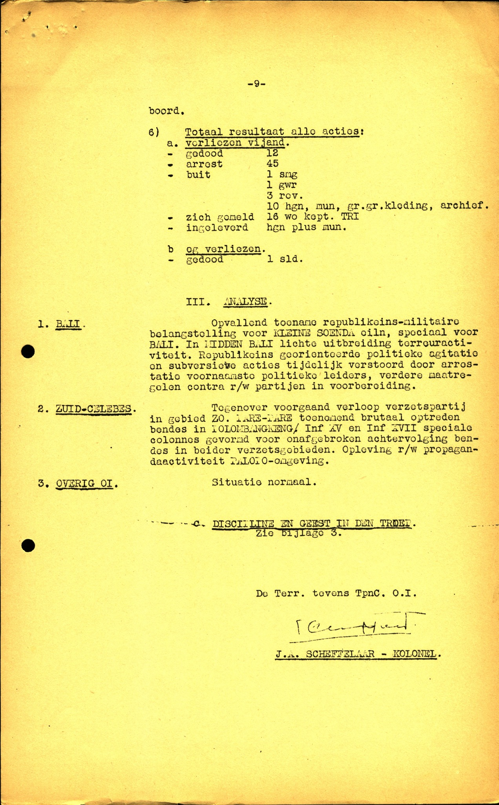
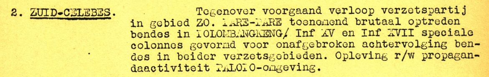
Transcriptie van de geselecteerde passage
2. ZUID-CELEBES. Tegenover voortgaand verloop verzetspartij in gebied ZO. PARE-PARE toenemend brutaal optreden bendes in [onzeker: POLOMBANGKENG]/ Inf XV en Inf XVII speciale colonnes gevormd voor onafgebroken achtervolging bendes in beider verzetsgebieden. Opleving r/w propagandaactiviteit PALOPO-omgeving.
Historisch kader
De militaire analyse beschrijft het optreden van Inf XV en Inf XVII vanuit het perspectief van de rapporterende koloniale legerleiding. Termen als ‘bendes’ en ‘verzetspartij’ zijn bronterminologie. De pagina zelf bevat geen rapportdatum; de eerdere datering als juni 1947 is hier niet als zelfstandig vastgesteld overgenomen.
Betekenis voor Daniël: Inf XV sluit aan bij Daniëls geregistreerde eenheid in Pare-Pare. Deze pagina noemt hem niet en bewijst geen deelname aan de genoemde colonnes of geweldshandelingen.
Scan 0051 — Geest in de troep: Zuid-Celebes
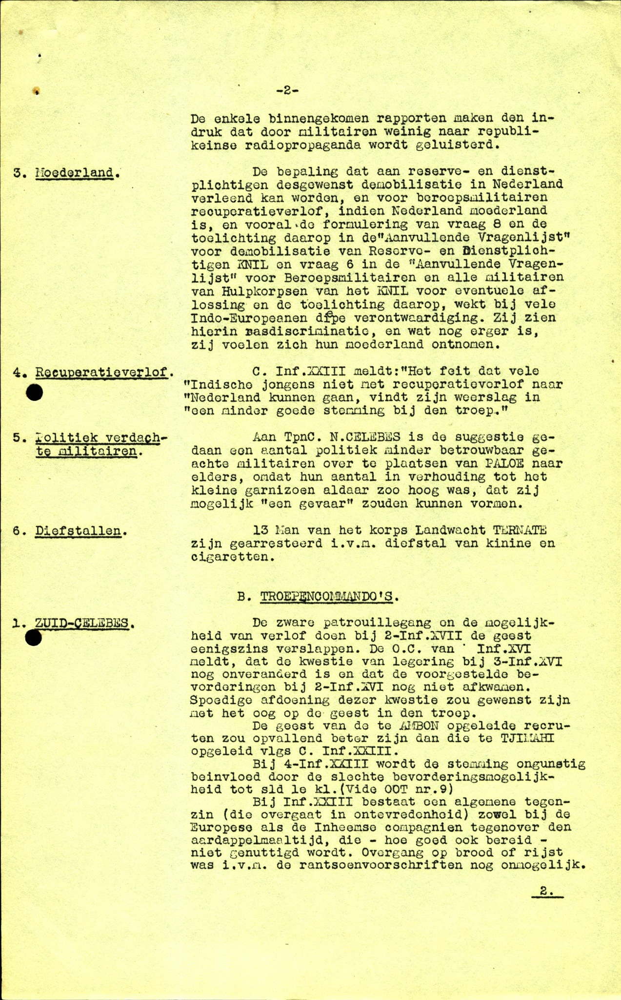
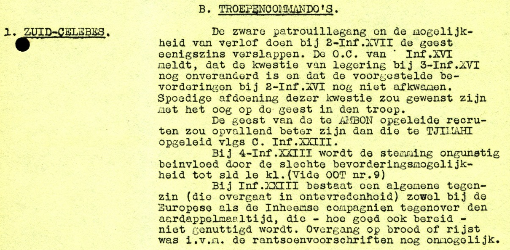
Transcriptie van de geselecteerde passage
B. TROEPENCOMMANDO’S. 1. ZUID-CELEBES. De zware patrouillegang en de moeilijkheid van verlof doen bij 2-Inf.XVII de geest eenigszins verslappen. De O.C. van Inf.XVI meldt, dat de kwestie van legering bij 3-Inf.XVI nog onveranderd is en dat de voorgestelde bevorderingen bij 2-Inf.XVI nog niet afkwamen. Spoedige afdoening dezer kwestie zou gewenscht zijn met het oog op de geest in den troep. De geest van de te AMBON opgeleide recruten zou opvallend beter zijn dan die te TJIMAHI opgeleid vlgs C. Inf.XXIII. Bij 4-Inf.XXIII wordt de stemming ongunstig beïnvloed door de slechte bevorderingsmogelijkheid tot sld 1e kl.(Vide OOT nr.9) Bij Inf.XXIII bestaat een algemeene tegenzin (die overgaat in ontevredenheid) zoowel bij de Europeesche als de Inheemsche compagnien tegenover den aardappelmaaltijd, die - hoe goed ook bereid - niet genuttigd wordt. Overgang op brood of rijst was i.v.m. de rantsoenvoorschriften nog onmogelijk.
Historisch kader
Een verslag over stemming, verlof, legering, bevordering en voeding bij verschillende onderdelen. Dit is een beoordeling door de legerleiding, geen rechtstreeks persoonlijk getuigenis. De rapportkop met datum staat niet op deze aangeleverde pagina.
Betekenis voor Daniël: De geselecteerde passage betreft Inf XVII, XVI en XXIII, niet Daniëls Inf XV. Zij biedt regionale en organisatorische context en zegt niets over zijn eigen stemming, verlof of gedrag.
Scan 0052 — Geest in de troep: garnizoen Toli-Toli
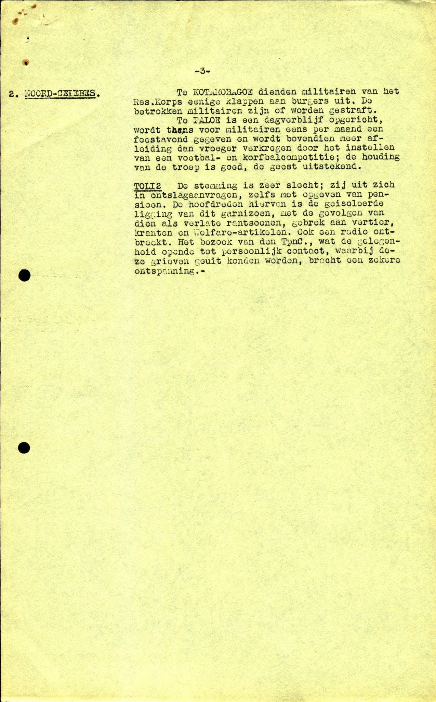
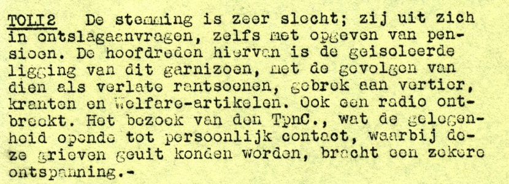
Transcriptie van de geselecteerde passage
TOLI2 De stemming is zeer slecht; zij uit zich in ontslagaanvragen, zelfs met opgeven van pensioen. De hoofdreden hiervan is de geïsoleerde ligging van dit garnizoen, met de gevolgen van dien als verlate rantsoenen, gebrek aan vertier, kranten en welfare-artikelen. Ook een radio ontbreekt. Het bezoek van den TpnC., wat de gelegenheid opende tot persoonlijk contact, waarbij deze grieven geuit konden worden, bracht een zekere ontspanning.-
Historisch kader
Het vervolgblad bespreekt Noord-Celebes. TOLI2 is de in het stuk gebruikte schrijfwijze voor Toli-Toli. De geselecteerde passage beschrijft isolement en voorzieningen in dit garnizoen. Andere alinea’s op het volledige blad gaan over Kotamobagoe en Paloe.
Betekenis voor Daniël: Dit garnizoen is geen bewezen standplaats van Daniël. De passage is context voor de omstandigheden van troepen elders en mag niet als zijn persoonlijke ervaring worden verteld.
Scan 0250 — 22 november 1947: 7-Inf XV van Pare-Pare naar Soerabaja
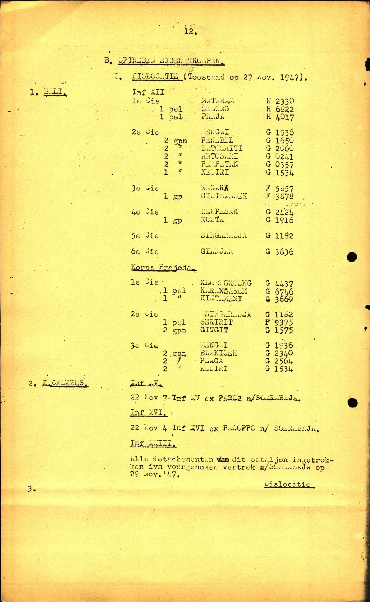
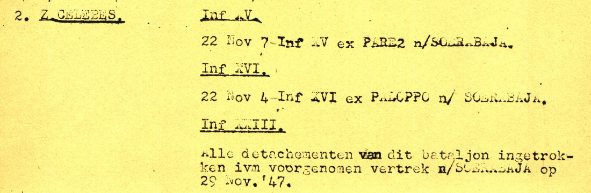
Transcriptie van de geselecteerde passage
2. Z.CELEBES. Inf XV. 22 Nov 7-Inf XV ex PARE2 n/SOERABAJA. Inf XVI. 22 Nov 4-Inf XVI ex PALOPO n/ SOERABAJA. Inf XXIII. Alle detachementen van dit bataljon ingetrokken ivm voorgenomen vertrek n/SOERABAJA op 29 Nov.’47.
Historisch kader
Onder ‘B. OPTREDEN EIGEN TROEPEN / I. DISLOCATIE (Toestand op 27 Nov. 1947)’ staan verplaatsingen van onderdelen in Zuid-Celebes. PARE2 staat voor Pare-Pare; ex betekent vanuit en n/ naar. Het betreft Inf XV, XVI en XXIII. Het vertrek van XXIII wordt hier nog als voorgenomen beschreven.
Betekenis voor Daniël: Het stamboek registreert Daniëls overgang naar Oost-Java op 21 november, dit eenheidsbericht noemt 22 november voor 7-Inf XV. Beide dateringen blijven staan. De aansluiting is relevant, maar bewijst geen individueel vertrek, schip of reisdatum.
Scan 0251 — 29 november: dislocatie Inf XV
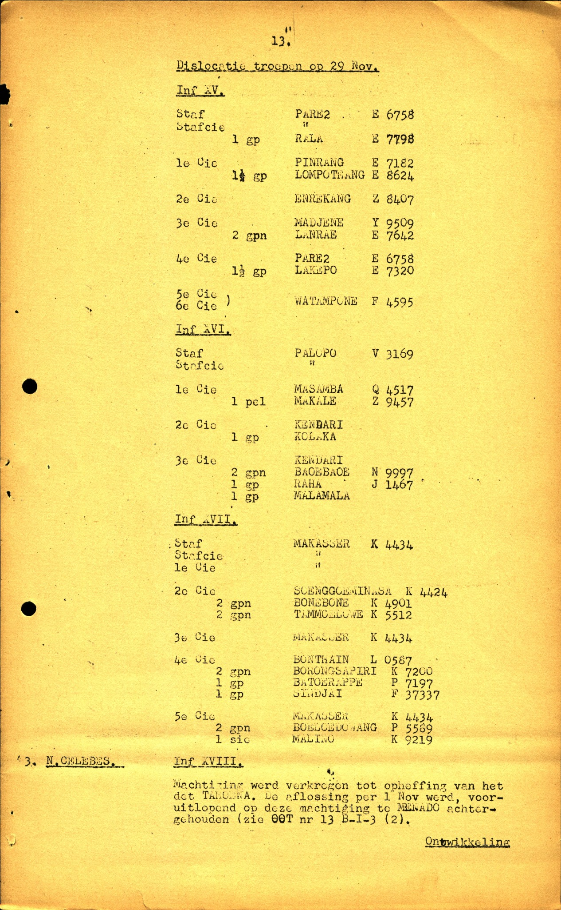
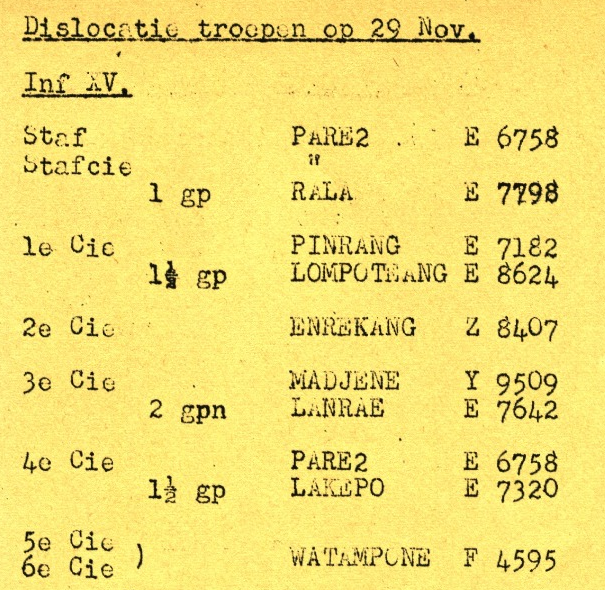
Transcriptie van de geselecteerde passage
Dislocatie troepen op 29 Nov.
Inf XV.
Staf PARE2 E 6758
Stafcie 〃
1 gp RALA E 7798
1e Cie PINRANG E 7182
1½ gp LOMPOTRANG E 8624
2e Cie ENREKANG Z 8407
3e Cie MADJENE Y 9509
2 gpn LANRAE E 7642
4e Cie PARE2 E 6758
1½ gp LAKEPO E 7320
5e Cie )
6e Cie ) WATAMPONE F 4595Historisch kader
Het overzicht geeft staf, compagnieën en kleinere onderdelen van Inf XV met plaatsnamen en kaartverwijzingen. Het opschrift vermeldt 29 november; het jaartal volgt uit de samenhang met het voorgaande blad. De plaatsnamen zijn getranscribeerd zoals leesbaar op de scan, niet stilzwijgend gemoderniseerd.
Betekenis voor Daniël: 7-Inf XV staat niet in dit geselecteerde overzicht. Aanwezigheid van andere delen van Inf XV op Celebes betekent niet dat Daniël daar bleef. De kaartcodes zijn geen persoonlijke registratienummers.
Scan 0268 — Inf XXIII: scheepsgewijs naar Soerabaja
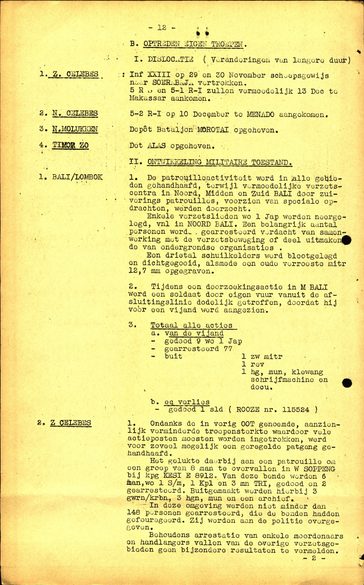
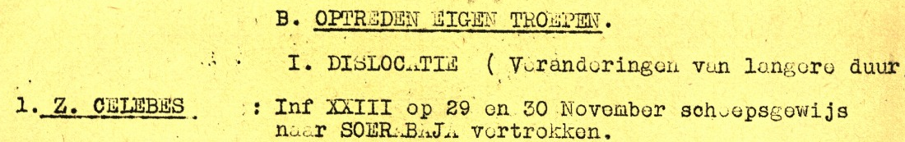
Transcriptie van de geselecteerde passage
B. OPTREDEN EIGEN TROEPEN. I. DISLOCATIE (Veranderingen van langere duur) 1. Z. CELEBES : Inf XXIII op 29 en 30 November scheepsgewijs naar SOERABAJA vertrokken.
Historisch kader
Dit latere eenheidsbericht beschrijft het vertrek van Inf XXIII als uitgevoerd, verdeeld over twee dagen. De bestandsidentificatie is 0268 en het gedrukte paginanummer 12. Een eerder genoemde viewerpositie 264 is geen vervanging voor deze bestandsidentificatie.
Betekenis voor Daniël: Daniëls dienststaat vermeldt Inf XXIII, M.C. op 1 december 1947. Dit bericht geeft bruikbare eenheidscontext, maar geen passagierslijst, scheepsnaam of bewijs dat hij op 29 of 30 november meevoer.
Scan 0270 — Distributielijst van het overzicht
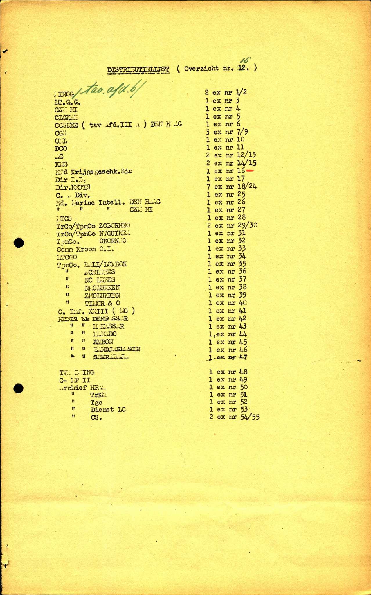
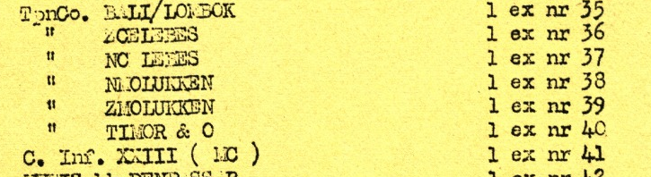
Transcriptie van de geselecteerde passage
TpnCo. BALI/LOMBOK 1 ex nr 35 〃 ZCELEBES 1 ex nr 36 〃 NCELEBES 1 ex nr 37 〃 N.MOLUKKEN 1 ex nr 38 〃 ZMOLUKKEN 1 ex nr 39 〃 TIMOR & O 1 ex nr 40 C. Inf. XXIII ( [M?]C ) 1 ex nr 41
Historisch kader
De lijst registreert ontvangers en genummerde exemplaren van het rapport. In de titel is ‘Overzicht nr. 12’ zichtbaar met een handgeschreven wijziging naar 15. De letters tussen haakjes bij Inf XXIII zijn niet voldoende scherp om zonder voorbehoud als M.C. te lezen; er wordt geen betekenis aan toegekend.
Betekenis voor Daniël: Een distributielijst is geen personeelslijst. De vermelding van een commandant of eenheid bewijst geen ontvangst, aanwezigheid of dienst van Daniël persoonlijk. Bestandsidentificatie 0270; de eerder genoemde viewerpositie 266 is hiervan onderscheiden.
Aanvullende onderzoekslead
5. Rapport december 1947
Een nieuw rapport, gedateerd 30 december 1947, beschrijft de periode 11–25 december 1947. Dit is voornamelijk regionale en politieke context over Oost-Indonesië, niet een persoonlijk verslag van Daniël. De verdere rapporten over Celebes zijn na zijn geregistreerde overplaatsing naar Soerabaja minder direct relevant.
Persoonlijke chronologie ter vergelijking
17 oktober 1946: XVIIe Bataljon Infanterie te Makassar.
23 november 1946: XVe Bataljon Infanterie te Pare-Pare.
13 oktober 1947: 7-Inf. XV te Pare-Pare.
21 november 1947: territoriale troepen Oost-Java te Soerabaja.
1 december 1947: Infanterie XXIII, M.C.; de precieze betekenis van M.C. moet nog worden geverifieerd.
1 oktober 1948: 2-Inf. IV te Malang.
Openstaande onderzoeksvraag
Welke transport- of verplaatsingsorder verbindt 7-Inf. XV te Pare-Pare in november 1947 met Soerabaja, en op welke datum vertrok welke compagnie? Hiervoor zijn bataljonsdagorders, inschepingslijsten en transportoverzichten nodig. De gevonden scans leveren een aanknopingspunt, maar nog geen sluitende persoonlijke colonne-identificatie.